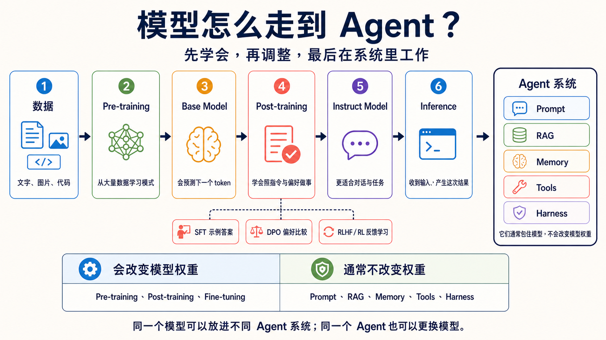

原课程本地核对资料，保留原内容与顺序。外链已改为本地阅读入口。命令中的原仓库路径请按本课运行指南换成实际位置；版本差异见本课说明。MIT © 2026 Wenyu Chiou。
Stage 1 — LLM 基础（LLM Basics）
LLM（Large Language Model）：能读写语言的模型。
本章目的：先看懂模型如何从数据走到 Agent，再通过一条可重复的本地到云端路径调用 LLM。你会理解 Token（词元）、Context Window（上下文窗口） 和 Temperature（温度），也会用成本与延迟解释模型选择。
📌 学习目标
完成本阶段后，你可以：
- 用 Ollama 的本地模型完成第一次 API（Application Programming Interface，让程序调用服务的接口） 调用，再与 Anthropic 做对照。
- 说出模型从 Pre-training、Post-training 到 Inference 的顺序。
- 用简单例子解释 token、context window 和 temperature。
- 从响应的
usage字段读出输入和输出 token。 - 用输入／输出价格、延迟和数据敏感度解释模型选择。
三个核心词
1. Token（词元）
Token 是模型读写文字时使用的计算单位，也常是 API 的计价单位。可以把它想成句子被切成的一小块积木；一个英文单词可能是一块，也可能被切成几块，中文一个字也不保证只是一块。本章会在练习 2 读取实际 input／output token，再用它估算成本；数量要看 Tokenizer（分词工具），不能用字数精确猜测。
2. Context Window（上下文窗口）
Context Window 是模型处理一次请求时可用的 token 空间。它像桌面：指令、资料和历史对话先占位置，模型还要留位置写答案；型号也可能另设较小的最大输出上限，所以两个数字都要查。本章会用它判断长文档何时要删减、摘要或分批。
3. Temperature（温度）
Temperature 是控制采样变化程度的参数。把模型想成每次都从几块候选积木中挑下一块：低值偏向最可能的候选，适合分类或固定格式；高值更常尝试其他候选，适合构思但可能更不稳定。本章把它当成输出稳定度的旋钮；它不会增加模型知识，也不会保证完全可复现。
模型如何从数据走到 Agent？
- Pre-training（预训练）：模型先从大量文字、图像或代码中学习模式。这会改变模型权重（模型内部学到的数值）。
- Base Model（基础模型）：完成预训练的模型，学会接续内容，但还不一定会遵循指令回答。
- Post-training（后训练）：再用示范、偏好或反馈，教模型遵循指令并更安全地完成任务。这一步也会改变权重。常见方法如下。
- SFT（Supervised Fine-Tuning）：用好的输入和答案教模型模仿。
- DPO（Direct Preference Optimization）：用较好、较差的答案配对教模型学习偏好。
- RLHF（Reinforcement Learning from Human Feedback）：把人类反馈用于强化学习。
- RL（Reinforcement Learning）：让模型依据奖励学习；奖励也可以来自规则。
- Instruct Model（指令模型）：再针对遵循指令做事调整过的模型。
- Fine-tuning（微调）：用较小、较专门的数据继续改变模型权重。Post-training 是广义的后续训练阶段；Fine-tuning 是其中一种常见做法。
- Inference（推理）：训练完成后，模型收到一次输入并产生一次结果。这是在使用模型，不是在重新训练它。
RAG（Retrieval-Augmented Generation）：先找相关资料，再依资料回答。
Agent 不是下一个模型版本。它在运行时用模型判断下一步，可搭配 RAG 和下列组件完成工作；这些组件通常不改模型权重。
- Prompt（提示词）：告诉模型任务与规则。
- Memory（记忆）：保存之后要用的信息。
- Tools（工具）：让系统查资料或执行动作。
- Harness（执行框架）：管理工具、规则与停止条件。
数据 → Pre-training → Base Model → Post-training → Instruct Model → Inference → Agent 系统

以下三项是进阶训练选修，初学者可先认识名字：
- GRPO（Group Relative Policy Optimization）：比较同一问题的多个答案，再根据相对表现学习。
- LoRA（Low-Rank Adaptation）：冻结原来的权重，再训练新增的低秩矩阵。
- PEFT（Parameter-Efficient Fine-Tuning）：只训练较少参数的一组方法。
想比较模型教模型的 Distillation（蒸馏），或降低数值精度的 Quantization（量化），请打开模型训练与调整选修指南。初学者不需要在本阶段自己训练模型。
场景式模型选择器
Typed Decision Model（类型化决策模型） 只从预设答案中选择、评分或返回概率。TypeSafe AI 的 Jev 属于这类，不能用来聊天、摘要或编程。
判断不是授权：程序仍须检查权限；寄信、付款或删文件前先请人确认。
| 你的场景 | 先试哪条路 | 选择理由 |
|---|---|---|
| 第一次学 API，想零费用反复试 | Ollama + gemma4:e4b |
本地运行，单次 API 成本为 $0，可以反复修改示例。 |
| 想比较云端质量，数据可以发送出去 | Claude Haiku 5.5／Sonnet 5.5 | Anthropic SDK（Software Development Kit，开发工具和库的工具包） 路径简单，按输入和输出 token 计费。 |
| OpenAI Agent API | GPT-6.1 Sol／Terra／GPT-6 Luna | Sol 写程序；Terra 看图与改写；Luna 做简单任务。先小测，再查价格。 |
| 文档很长，还要处理图像或视频 | Gemini 3.8 Flash 或 Kimi K3.1 Pro | 先查 context 和多模态支持，用你的文档测试。 |
| 中文 API 任务，希望控制用量 | DeepSeek V4.1 Flash 或 GLM-5.3 | 比较官方价格、输出限制和可用性，不要只看模型名称。 |
| 固定选项的分类、评分或分流，结果要直接交给程序 | Jev 1.13（服务 Early access） | 返回 Choice、Score 或 Noul 的概率结果；低置信度或高风险动作仍要交给人或另一个模型。 |
| 隐私、离线或需要自部署 | Llama 4、Qwen 3.8、Gemma 4 等开放权重 | 先估算硬件和授权，再用 Ollama 或其他运行时测量真实速度。 |
Gemini 4 Carbon 已公告，但一般开发者还不能直接用。Google 先逐步开放给指定的电脑安全团队与可信伙伴；先选已开放的模型练习。官方公告。
Haiku 5.5（2026-10-07 发布，2026-10-08 核查） 适合分类、摘要和范围明确的子代理；复杂编程 Agent 仍先评估 Sonnet／Opus。API ID 是固定的 claude-haiku-5-5，没有日期后缀或另一个 alias。练习 1、3 改用 5.5；temperature 练习和跨章示例保留 Haiku 4.5 兼容基线。5.5 默认 adaptive thinking，须按区块 type 取文本、保留 thinking 区块并重新计算 token；不能只换 ID。参考 发布公告 和 Haiku 5.5 迁移指南。
🚪 进入条件
主要路径使用本地 Ollama；开始前只需确认时间、工具和预算。
🧭 展开时间、先备、环境与预算
时间与先备
预留约 1 周、5–8 小时。你应该能运行 Python script，并对 HTTP／REST 有基本概念。主路径使用本地 Ollama，因此没有 API key 也不会卡住。如果还不熟悉 Python 或命令行，请先回到 Stage 0。
环境
Path A 需要 Ollama、pip install openai 和 ollama pull gemma4:e4b。低内存机器可以改用 gemma4:e2b。Stage 3 之后的工具调用练习使用 qwen2.5:3b；不要把这个 tag 混到本章的聊天示例中。Path B 需要 pip install anthropic 和 ANTHROPIC_API_KEY。
预算
本地路径每次调用成本为 $0（仍会消耗电力和时间）。每个练习运行 3–5 次时，云端总额会随提示长度和型号变化；从每次响应的 usage 计算，再乘以计划次数。下面每个练习都给出单次预算提醒和阶段预算方法；这只是教学估算，不是账单保证。
📚 必修阅读
先知道这七个官方入口；需要时再打开，不必全部读完才开始练习。
先按 1–3 阅读，再开始练习；需要了解模型、tokenizer 或本地运行时细节时查阅 4–7：
- OpenAI：模型如何开发 — 数据、训练与模型之间的关系。
- Google Machine Learning：LLM 调整 — 分清 Prompt Engineering、Fine-tuning 与 Distillation 的边界。
- Anthropic Claude 模型总览 — 型号、context 和价格入口。
- OpenAI API 模型 — 型号与计价字段。
- Google Gemini 模型 — GA／Preview 状态与 context。
- Hugging Face LLM Course：Tokenizers — tokenizer 如何切分文本。
- Ollama 官方网站 — 安装和运行本地模型。
🛠 动手练习
练习 1：LLM API（hello world）
成果： 用几行核心代码取得响应，并从 usage 读出输出 token。单次预算：Ollama $0；Anthropic Haiku 按本次 input／output usage 与 5.5 的 $0.10/$0.50 短提示费率（提示超过 100K token 时为 $0.50/$2.50）计算。阶段预算：本地反复运行仍为 $0；云端累加 3–5 次的实际 usage。
📋 起手码 — Path A（本地 Ollama gemma4:e4b、默认）（复制到 practice_1.py，运行 python practice_1.py）
# 需要：pip install openai （用 OpenAI-compatible SDK 与 Ollama 通信）
# 运行前：ollama pull gemma4:e4b && ollama serve
import sys
if hasattr(sys.stdout, "reconfigure"):
sys.stdout.reconfigure(encoding="utf-8", errors="replace")
from openai import OpenAI
client = OpenAI(
base_url="http://localhost:11434/v1",
api_key="ollama", # Ollama 不检查这个占位值
)
r = client.chat.completions.create(
model="gemma4:e4b",
max_tokens=100,
reasoning_effort="none",
messages=[{"role": "user", "content": "用一句话自我介绍。"}],
)
# === 自我验证 ===
choice = r.choices[0]
text = choice.message.content or ""
print("响应：", text)
print("usage:", r.usage)
assert choice.finish_reason == "stop" and text.strip(), f"Expected complete non-empty response; got finish_reason={choice.finish_reason!r}"
assert r.usage.completion_tokens > 0, "output token 应大于 0"
print("✅ 练习 1 通过 — Ollama gemma4:e4b 已能在本地响应，每次 $0")
📋 起手码 — Path B（Anthropic API，可选）（复制到 practice_1_anthropic.py）
# 需要：pip install anthropic
# 环境变量：export ANTHROPIC_API_KEY=sk-ant-...
import sys
if hasattr(sys.stdout, "reconfigure"):
sys.stdout.reconfigure(encoding="utf-8", errors="replace")
import anthropic
client = anthropic.Anthropic()
msg = client.messages.create(
model="claude-haiku-5-5",
max_tokens=4096,
output_config={"effort": "low"},
messages=[{"role": "user", "content": "用一句话自我介绍。"}],
)
# === 自我验证 ===
text = "".join(block.text for block in msg.content if block.type == "text")
print("响应：", text)
print("usage:", msg.usage)
assert msg.stop_reason in ("end_turn", "max_tokens"), f"非预期 stop_reason: {msg.stop_reason}"
assert len(text) > 0, "响应不应为空"
assert msg.usage.input_tokens > 0 and msg.usage.output_tokens > 0, "token 数应大于 0"
print("✅ 练习 1 通过 — 已成功调用 Anthropic API")
练习 2：Tokens
成果： 重复发送同一个提示，观察语言、temperature 和输出长度如何改变 token 用量。单次预算：Ollama $0；Anthropic Haiku 按该次 input／output usage 与官方费率计算。阶段预算：本地为 $0；Path B 累加 3–5 组重复测试的实际 usage。
📋 起手码 — Path A（本地 Ollama gemma4:e4b、默认）（复制到 practice_2.py）
# 需要：pip install openai （用 OpenAI-compatible SDK 与 Ollama 通信）
# 运行前：ollama pull gemma4:e4b && ollama serve
import sys, statistics
if hasattr(sys.stdout, "reconfigure"):
sys.stdout.reconfigure(encoding="utf-8", errors="replace")
from openai import OpenAI
client = OpenAI(base_url="http://localhost:11434/v1", api_key="ollama")
PROMPTS = {
"中文": "用一句话描述一只猫在做什么。",
"English": "Describe in one sentence what a cat is doing.",
}
N = 10 # 本地运行较慢时先用小一点的 N，确认成功后再加大
for label, prompt in PROMPTS.items():
output_tokens = []
for _ in range(N):
r = client.chat.completions.create(
model="gemma4:e4b",
max_tokens=80,
reasoning_effort="none",
temperature=1.0, # 调高 temperature 以观察变化
messages=[{"role": "user", "content": prompt}],
)
choice = r.choices[0]
text = choice.message.content or ""
assert choice.finish_reason == "stop" and text.strip(), f"Discard incomplete/empty output (finish_reason={choice.finish_reason!r})"
output_tokens.append(r.usage.completion_tokens)
print(f"\n[{label}] prompt: {prompt}")
print(f" input tokens: {r.usage.prompt_tokens}")
print(f" output tokens — min={min(output_tokens)} max={max(output_tokens)} mean={statistics.mean(output_tokens):.1f} stdev={statistics.stdev(output_tokens):.1f}")
# === 自我验证 ===
assert len(output_tokens) == N and all(n > 0 for n in output_tokens), "每个 output token 数都应大于 0"
print("\n✅ 练习 2 通过 — 已观察到两种语言的 output token，本地运行 $0")
print("💡 token 数会受 tokenizer 和实际内容影响；不要只按字数推算，也不要预设某种语言一定较多。")
📋 起手码 — Path B（Anthropic API，可选）（复制到 practice_2_anthropic.py）
# 需要：pip install anthropic
import sys, statistics
if hasattr(sys.stdout, "reconfigure"):
sys.stdout.reconfigure(encoding="utf-8", errors="replace")
import anthropic
client = anthropic.Anthropic()
PROMPTS = {"中文": "用一句话描述一只猫在做什么。", "English": "Describe in one sentence what a cat is doing."}
for label, prompt in PROMPTS.items():
output_tokens = []
for _ in range(20):
msg = client.messages.create(model="claude-haiku-4-5", max_tokens=80, temperature=1.0,
messages=[{"role": "user", "content": prompt}])
output_tokens.append(msg.usage.output_tokens)
print(f"[{label}] input={msg.usage.input_tokens} output min/max/mean={min(output_tokens)}/{max(output_tokens)}/{sum(output_tokens)/len(output_tokens):.1f}")
Anthropic 调用使用 client.messages.create()、usage.input_tokens 和 content block，这些字段与 Ollama 的 OpenAI-compatible 形状不同。请用返回的 token 数计算本次成本。
练习 3：Pricing / Latency
成果： 分别测量同一个小任务的 token 成本与等待时间。单次预算：Ollama $0；Anthropic Haiku 按本次 input／output usage 与官方费率计算。阶段预算：本地为 $0；Path B 先运行 1 次取得实际数量，再乘以计划次数。
📋 起手码 — Path A（本地 Ollama gemma4:e4b、测量 latency）（复制到 practice_3.py）
# 需要：pip install openai
# 运行前：ollama pull gemma4:e4b && ollama serve
import sys, time
if hasattr(sys.stdout, "reconfigure"):
sys.stdout.reconfigure(encoding="utf-8", errors="replace")
from openai import OpenAI
client = OpenAI(base_url="http://localhost:11434/v1", api_key="ollama")
# 测量 5 次 latency 与 output token
latencies = []
output_tokens = []
for _ in range(5):
t0 = time.time()
r = client.chat.completions.create(
model="gemma4:e4b",
max_tokens=200,
messages=[{"role": "user", "content": "你好！请自我介绍一下。"}],
)
latencies.append(time.time() - t0)
output_tokens.append(r.usage.completion_tokens)
# 统计
avg_latency = sum(latencies) / len(latencies)
out_tok_avg = sum(output_tokens) / len(output_tokens) # 五次平均值
tps = out_tok_avg / avg_latency if avg_latency > 0 else 0
print(f"model: gemma4:e4b（本地）")
print(f"5 次 latency（秒）: min={min(latencies):.2f} max={max(latencies):.2f} mean={avg_latency:.2f}")
print(f"avg output: {out_tok_avg} tokens，约 {tps:.1f} tokens/sec")
print(f"\n1000 次成本：$0（本地），预计时长：{avg_latency * 1000 / 60:.1f} 分钟")
# === 自我验证 ===
assert avg_latency > 0, "latency 应大于 0"
assert out_tok_avg > 0, "output token 应大于 0"
print(f"\n✅ 练习 3 通过 — 本地 model 每次 $0，但运行 1000 次约需 {avg_latency * 1000 / 60:.0f} 分钟")
print("💡 对照 Path B Anthropic：请按实际 input/output usage 与官方费率估算 1000 次成本，再与本地等待时间比较。")
📋 起手码 — Path B（Anthropic API，计算成本）（复制到 practice_3_anthropic.py）
# 需要：pip install anthropic
import sys
if hasattr(sys.stdout, "reconfigure"):
sys.stdout.reconfigure(encoding="utf-8", errors="replace")
import anthropic
# Anthropic 公开定价（每 1M token、USD）— 运行前查看 https://www.anthropic.com/pricing
PRICING = {
"claude-haiku-5-5": {"input": 0.10, "output": 0.50},
"claude-sonnet-5-5": {"input": 2.00, "output": 10.00},
"claude-opus-5-5": {"input": 4.00, "output": 20.00},
"claude-fable-5-1": {"input": 10.00, "output": 50.00},
}
def rates_for(model, input_tokens):
if model == "claude-haiku-5-5" and input_tokens > 100_000:
return {"input": 0.50, "output": 2.50}
return PRICING[model]
client = anthropic.Anthropic()
MODEL = "claude-haiku-5-5"
msg = client.messages.create(model=MODEL, max_tokens=4096,
output_config={"effort": "low"},
messages=[{"role": "user", "content": "你好！请自我介绍一下。"}])
in_tok, out_tok = msg.usage.input_tokens, msg.usage.output_tokens
rates = rates_for(MODEL, in_tok)
cost_one = (in_tok * rates["input"] + out_tok * rates["output"]) / 1_000_000
print(f"model: {MODEL}")
print(f"single: input={in_tok} output={out_tok} → ${cost_one:.6f}")
print("1000-call rate-only illustration (not measured cross-model costs):")
for name in PRICING:
r = rates_for(name, in_tok)
c = (in_tok * r["input"] + out_tok * r["output"]) / 1_000_000 * 1000
print(f" {name:<22} ${c:.4f}")
# === 自我验证 ===
assert cost_one > 0, "Cloud LLM 调用应有正成本"
print("\n✅ 练习 3 通过（Anthropic）— 已计算本次成本；跨模型数字只比较单价，须各自重新测量 token")
🎯 精选 Projects
推荐 Capstone：个人文档摘要成本／质量比较器
建立一个小型命令行工具：读入 3–5 段你有权使用的文本，分别用 Ollama 和一个 Anthropic 型号摘要；记录输入／输出 token、延迟、估算成本，并用固定检查表标注摘要是否遗漏关键事实。它把本章三个核心词和模型选择器连接起来，不要求先做 RAG 或 agent。
📦 Capstone 验收清单与其他 Project 入口
完成后应能展示：
- 同一输入的两条路径与模型名称。
- 每次调用的 input／output token、延迟与单次成本。
- 固定的质量检查表，而不是只凭主观印象选模型。
- 何时使用本地、何时接受云端成本，以及 context 不足时如何分批。
下面的表格保留本章原有的 17 个延伸入口。它们是选读资源，不是本章必做项目。推荐度是编辑判断，不是 GitHub 热度：⭐⭐⭐⭐⭐ 代表跳过会卡住；本表都是补充入口，所以如实使用 ⭐⭐⭐⭐、⭐⭐⭐ 或历史参考的 ⭐⭐，不列会变化的 stars。
| 分类 | 资源 | 入口 | 推荐度 | 用途／状态 |
|---|---|---|---|---|
| 官方 API 入门 | Anthropic Cookbook | GitHub | ⭐⭐⭐⭐ | Claude API notebook，可查 tool use、batch 和 prompt cache。 |
| Anthropic Courses | GitHub | ⭐⭐⭐⭐ | 已归档的官方课程；可看旧示例，动手时请对照下方现行 API Quickstart。 | |
| OpenAI Cookbook | GitHub | ⭐⭐⭐⭐ | OpenAI API、structured output 和 function calling 示例。 | |
| Anthropic Claude API Quickstart | 官方文档 | ⭐⭐⭐ | 快速完成第一次 Claude API 调用。 | |
| 中文教材 | datawhalechina/happy-llm | GitHub | ⭐⭐⭐⭐ | 用中文理解 LLM 原理和训练流程。 |
| datawhalechina/llm-universe | GitHub | ⭐⭐⭐⭐ | 从 API 基础延伸到知识库和 RAG。 | |
| datawhalechina/llm-cookbook | GitHub | ⭐⭐⭐ | Andrew Ng 课程的中文改编，更新速度较慢。 | |
| jingyaogong/minimind | GitHub | ⭐⭐⭐ | 从零实现小型模型训练，Apache-2.0。 | |
| 英文课程 | Hugging Face — LLM Course | 课程 | ⭐⭐⭐⭐ | Transformer、tokenizer 与 Hugging Face 生态。 |
| LangChain Academy | 课程 | ⭐⭐⭐ | 官方免费课程，包含 RAG 与 agent。 | |
| 本地运行 | ollama/ollama | GitHub | ⭐⭐⭐⭐ | 本章 Path A 的本地运行入口。 |
| ggml-org/llama.cpp | GitHub | ⭐⭐⭐⭐ | 理解量化和本地推理底层。 | |
| mudler/LocalAI | GitHub | ⭐⭐⭐ | 提供 OpenAI 兼容的 self-host 服务。 | |
| ml-explore/mlx | GitHub | ⭐⭐⭐ | Apple Silicon 的机器学习框架。 | |
| 从零理解 | Karpathy — Let's build GPT from scratch | 视频 | ⭐⭐⭐⭐ | 用 PyTorch 从零构建 GPT。 |
| rasbt/LLMs-from-scratch | GitHub | ⭐⭐⭐⭐ | 用代码深入 tokenizer、attention 和训练。 | |
| karpathy/LLM101n | GitHub | ⭐⭐ | 已归档的课程大纲，属于历史参考，不是现行教学。 |
其他 Project（按难度）
- 入门：多语言 token 计数器、单句摘要器、temperature 对照表。
- 中阶：跨供应商 prompt 评测器、错误重试包装器、本地模型延迟仪表板。
- 延伸：小型文档分批摘要流程、可配置模型路由器、隐私数据的本地推理服务。
练习 4：Cross-Provider 比较
成果： 用同一个提示比较不同供应商的输出，记录差异，不把单次结果当成排名。单次预算：Path A Ollama $0；Path B 按三家 API 的实际 token 计费。阶段预算：本地为 $0；云端先各运行 1 次，再按 3–5 组评测估算。
🔬 练习 4 详细路径（选做）
- Path A（Ollama，主要练习）： 使用
examples/stage-1/04-cross-provider/的 Ollama 调用，先建立本地基线。 - Path B（Anthropic，可选）： 在同一数据集加入 Anthropic SDK；如果也加入 OpenAI／Google，分别记录型号、参数、token 和失败情况。
- 比较回答风格、长度、格式遵守度和事实遗漏；把结果视为你的任务小评测，不是官方规格或普遍排名。
这个 starter 包含三家 SDK 的并行调用，缺少某家 key 时会跳过；它是 illustrative 示例，不是 chapter-length 教程。
练习 5：Error Handling
成果： 为错误分类、重试和停止条件写出可测试的处理流程。单次预算：Path A Ollama $0；Path B 只使用 mock 时没有 API 费用。阶段预算：本地与 mock 测试为 $0；若加入云端集成测试，限制为 1–2 次并累加实际 token 成本。
🧰 练习 5 详细路径（选做）
- Path A（Ollama，主要练习）： 先在
examples/stage-1/05-error-handling/运行 mock-based test，再用本地端点观察可恢复的网络错误。 - Path B（Anthropic，可选）： 用 Anthropic SDK 的异常类型接上同一 retry wrapper；API key 错误和 context 过长不应无限重试。
- 至少覆盖错误 API key、提示过长和网络中断；exponential backoff 要有上限和明确的最大尝试次数。
这个 starter 不需要真的断网就能验证重试逻辑；它是 illustrative 示例，不是 chapter-length 教程。
练习 6：Local LLM
成果： 在自己的电脑上启动 Ollama，并通过 OpenAI-compatible API 调用本地模型。单次预算：Ollama $0（另有硬件电力成本）；Path B 按实际 token 计费。阶段预算：本地练习为 $0；若用 Anthropic 做一次质量对照，限制为 1–3 次并记录 usage。
🦙 练习 6 详细路径（选做）
Path A（Ollama，主要可运行路径）：
# 1. 安装 Ollama：https://ollama.com
ollama pull qwen2.5:3b
ollama serve # 默认 port 11434
# 需要：pip install openai
# 运行前：Ollama 已启动，qwen2.5:3b 已下载
import sys
if hasattr(sys.stdout, "reconfigure"):
sys.stdout.reconfigure(encoding="utf-8", errors="replace")
from openai import OpenAI
client = OpenAI(
base_url="http://localhost:11434/v1",
api_key="ollama", # Ollama 不检查这个占位值
)
r = client.chat.completions.create(
model="qwen2.5:3b",
messages=[{"role": "user", "content": "用 3 句话介绍什么是 ReAct。"}],
)
text = r.choices[0].message.content
print("响应：", text)
# === 自我验证 ===
assert len(text) > 10, "响应太短，Ollama 可能没有启动"
print("✅ 练习 6 通过 — 本地 Ollama 已能通过 OpenAI-compatible API 调用")
print("💡 本次调用为 $0（不含电费）")
Path B（Anthropic，可选）： 把同一个 ReAct 提示发送到 claude-haiku-4-5，保存响应和 msg.usage，再与 Path A 的格式遵守度、延迟和成本比较。不要把云端结果当成本地模型的规格保证。
没有 Ollama 时，可以把 base_url 换成 LM Studio（http://localhost:1234/v1）或 vLLM endpoint；接口相同，但模型 tag 和硬件需求需要重新确认。
🌐 完整 18 个家族表（官方规格入口）
全表查核：2026-09-22 UTC。GPT／Kimi 局部更新：2026-10-26 UTC。Claude 一行更新：2026-10-08 UTC。Gemini 一行更新：2026-10-29 UTC。Muse／Jev 与 GPT 选读更新：2026-10-15 UTC。Mistral Large 4 更新：2026-11-02 UTC。DeepSeek／Decisions／Clef 选读更新：2026-10-23 UTC。
没有可靠公开数字就写“官方未公布”。价格通常是 USD／每 1M token；供应商若用别的单位，就按官方单位记录。 缓存（cache） 就像重复使用读过的便条：读取旧内容和写入新内容可能有不同价格。
先展开你想查的家族，再看型号、价格与限制。
Claude
| 栏位 | 内容 |
|---|---|
| 当前推荐型号 | Fable 5.1（claude-fable-5-1） |
Mythos 5.1（claude-mythos-5-1） | |
Opus 5.5（claude-opus-5-5） | |
Sonnet 5.5（claude-sonnet-5-5） | |
Haiku 5.5 (claude-haiku-5-5) | |
| 状态 | Fable／Opus／Sonnet／Haiku：正式可用；Mythos：限核准用户 |
| Context | 1M context／128K 最大输出 |
| 价格或授权 | Claude API：Fable／Mythos US$10/$50、Opus US$4/$20、Sonnet US$2/$10、Haiku US$0.10/$0.50 (prompt ≤100K), US$0.50/$2.50 (prompt >100K)（每百万输入／输出 token）；Sonnet cache read US$0.10，Opus US$0.20，Fable／Mythos US$0.25 |
| 适合做什么 | 长文、编程、长时间 Agent 工作流 |
| 限制 | Mythos 5.1 限网络安全与生命科学核准用户；Sonnet 5.5 的工具指定与 temperature 设置不同于旧版，升级现有程序前先看迁移指南；云端合作平台价格另查 |
| 官方来源 | Claude 模型总览 · Opus 5.5 · Sonnet 5.5 · 迁移指南 · Haiku 5.5 · Haiku 5.5 migration · Claude API 价格 |
GPT
| 栏位 | 内容 |
|---|---|
| 当前推荐型号 | GPT-6 Astra（gpt-6-astra） |
GPT-6.1 Sol（gpt-6.1-sol） | |
GPT-6.1 Terra（gpt-6.1-terra） | |
GPT-6 Luna（gpt-6-luna） | |
| 状态 | 正式 API 模型；免费层不支持 |
| Context | 1.05M context／128K 最大输出 |
| 价格或授权 | Standard API，每百万 token，US$ 输入／cache 读／cache 写（30 分钟）／输出。 |
| Astra $10/$1/$12.50/$50。 | |
| Sol 6.1 $2/$0.10/$2.50/$10。 | |
| Terra 6.1 $1/$0.05/$1.25/$5；12 小时 cache 写入 $2.50。 | |
| Luna $0.10/$0.01/$0.125/$0.50。 | |
| 适合做什么 | Sol 6.1 用于编程与多步 Agent 工作。Terra 6.1 看图、操作画面与改写文本。Luna 用于聚焦、重复任务。Astra 的成本与质量差异要自行评测。 |
| 限制 | Sol 6.1 与 Terra 6.1 的工具调用须用 Responses API。Chat Completions 不支持工具调用。超过 272K 输入时，整次请求输入与 cache 价格为 2 倍、输出为 1.5 倍。Batch／Flex 半价，Fast 为 2 倍。工具可能另收费。 |
| 官方来源 | GPT-6 Astra · GPT-6.1 Sol · GPT-6.1 Terra · GPT-6 Luna · OpenAI API 价格 |
Jev（TypeSafe AI）
| 栏位 | 内容 |
|---|---|
| 当前推荐型号 | TypeSafe direct：稳定 Jev 1.13（jev-1.13.0／jev-latest） |
Preview Jev 1.14（jev-1.14.0／jev-preview） | |
Cloudflare route：typesafe/jev | |
| 状态 | 1.13：正式模型；1.14：Preview。服务仍为 Early access |
| Context | TypeSafe direct：64K／request，state 加最长 question 上限 32K。Cloudflare route：32K |
| 价格或授权 | TypeSafe direct：US$0.042／百万 input token，output 不计费。Cloudflare route：以 Cloudflare dashboard 为准 |
| 适合做什么 | 固定选项分类、路由、rubric 评分与 guardrail 判断 |
| 限制 | 不生成自由文本；概率不等于正确。程序与 Eval 决定门槛、权限与 fallback。262K 长 context 与图片须另启用，属 experimental，不是默认 |
| 官方来源 | TypeSafe 模型规格 · Jev 入门 · Early access 公告 · Cloudflare route · 图片限制 |
Gemini
| 字段 | 内容 |
|---|---|
| 目前推荐型号 | Gemini 3.8 Flash |
Gemini 4 Argon（gemini-4-argon） | |
| 状态 | Flash／Argon：正式可用。 |
| Gemini 4 Carbon：Preview；限指定伙伴逐步开放，一般 API 尚未开放。 | |
| Context | Flash：1,048,576 context／65,536 最大输出。 |
| Argon：1,048,576 输入与输出合计；同步输出缺省 65,536。 | |
| Carbon：输入 context 与最大输出官方未公布。 | |
| 价格或授权 | 每百万 token，US$。Flash：2026-12-31 前输入／输出 $0.75/$3.75。 |
| Argon Standard 输入／cache／输出：2026-11-30 前 $2/$0.10/$10。2026-12-01 起 $4/$0.20/$20。 | |
| Carbon 公告优惠价：输入／输出 $2/$10。缓存输入为当期输入价的 5%（优惠期 $0.10）。 | |
| Carbon 公告优惠后价格：输入／输出 $4/$20。优惠结束日期官方未公布。 | |
| 适合做什么 | Flash 用于多模态与 Agent 练习。Argon 可比较长任务与编程成果。 |
| Carbon 的公告方向是长时间编程任务与电脑安全防御；尚不作一般入门推荐。 | |
| 限制 | Argon 无免费层。输出到 1M 须使用 long decode，不是每次请求的缺省。 |
| Carbon 的 API ID、工具支持与正式开放日期官方未公布。公告价格不表示现在就能调用 API。 | |
| 本章仍先用本机模型练习。 | |
| 官方来源 | Gemini 3.8 Flash · Gemini API 定价 · Gemini 4 Argon 规格 · 发布公告 |
| Carbon 公告与价格预告 · 一般开发者模型清单 |
DeepSeek
| 栏位 | 内容 |
|---|---|
| 当前推荐型号 | V4.1 Flash 1017（deepseek-flash） |
V4 Pro 0813（deepseek-v4-pro） | |
| 状态 | 两者 API 正式可用；Flash 1017 另有开放权重。旧 V4 Flash 已退役。 |
| Context | 1M context／384K 最大输出 |
| 价格或授权 | 美元（US$）／每百万 token；以下依尖峰／离峰列。 Flash 未命中快取输入 US$0.30/$0.15、输出 US$1.20/$0.60、快取命中输入 US$0.006/$0.003。 Pro 未命中快取输入 US$1.32/$0.66、输出 US$3.96/$1.98、快取命中输入 US$0.044/$0.022。 Flash 1017 开放权重为 MIT；自架硬件与执行费另计。 |
| 适合做什么 | 推理、编程与大量 token 任务 |
| 限制 | 旧 峰值：周一至五 UTC 01:00–04:00、06:00–10:00。中国公众假期不算峰值；其余时间为离峰。 Flash 1017 权重是大型模型，不当作一般笔记本的起手式。 |
| 官方来源 | DeepSeek 模型与价格 · 更新记录 · Flash 1017 官方权重 |
Kimi
| 栏位 | 内容 |
|---|---|
| 当前推荐型号 | Kimi K3.1 Pro（kimi-k3.1-pro） |
Kimi K3.1 Pro Highspeed（kimi-k3.1-pro-highspeed） | |
| 状态 | 正式可用 API；首次充值至少 US$1 后解锁。完整权重预告 2026-11-04 公布，目前不能当成已可下载。 |
| Context | 1,048,576 token。 |
| 价格或授权 | 国际 API，每百万 token，US$ 输入／cache 读／cache 写（5 分钟）／输出；未含税。 |
| Pro $2/$0.20/$2/$10。 | |
| Highspeed $4/$0.20/$4/$20。 | |
| 重复前缀自动缓存；1 小时保留另有写入费率。API 按量计费，不等于 Kimi 会员或 Kimi Code 订阅。 | |
| 适合做什么 | 长编程任务、看图与视频、整理长文档。先用自己的任务测试，不把供应商分数当成成果保证。 |
| 限制 | 固定开启思考。reasoning_effort 可选 low／high／max，默认 max。工具对话须保留完整 assistant 消息。 |
| K3 是前一代。K2 系列自 2026-10-31 不再开放新账号，官方计划于 2026 年底退役；不是已全部停用。 | |
| 官方来源 | K3.1 Pro 指南 · 型号与迁移 · 国际 API 价格 · 计费说明 · 缓存计费 |
Hunyuan
| 栏位 | 内容 |
|---|---|
| 当前推荐型号 | Hy3（TokenHub） |
| 状态 | 正式可用 |
| Context | 256K |
| 价格或授权 | API：cache hit／输入／输出分别为 CNY 0.25／1／4，每百万 tokens |
| 适合做什么 | 中文推理与 Tencent Cloud 整合 |
| 限制 | hy3-preview 已于 2026-08-31 下线；Hy4 仍是 Preview |
| 官方来源 | TokenHub 模型列表 · TokenHub 定价 · Hy3 迁移公告 |
MiniMax
| 栏位 | 内容 |
|---|---|
| 当前推荐型号 | MiniMax M3 |
| 状态 | 开放权重 |
| Context | 1M |
| 价格或授权 | MiniMax API 优惠价（每百万输入／cache read／输出 token）：≤512K 为 US$0.30/$0.06/$1.20；512K–1M 为 US$0.60/$0.12/$2.40；权重使用 MiniMax Community License |
| 适合做什么 | 文本、视觉、coding 与自部署工作 |
| 限制 | 优惠与转售平台价格可能变动；不是 Apache／MIT |
| 官方来源 | MiniMax M3 model card · MiniMax API 定价 |
Qwen
| 栏位 | 内容 |
|---|---|
| 当前推荐型号 | qwen3.8-max（API） |
| Qwen3.8 开放权重变体 | |
| 状态 | 正式可用 |
| Context | 1M |
| 价格或授权 | API 按地区定价；例如北京为 CNY 12／36，每百万输入／输出 tokens；开放权重变体使用各自授权 |
| 适合做什么 | 中文任务、多模态、自部署工作流 |
| 限制 | API 型号与开放权重变体不可混用；可用性与授权要分别确认 |
| 官方来源 | Qwen 3.8 Max |
GLM
| 栏位 | 内容 |
|---|---|
| 当前推荐型号 | GLM-5.3 |
| 状态 | 正式可用 |
| Context | 1M（输出 128K） |
| 价格或授权 | API：输入／cache hit／输出分别为 US$1.40／$0.26／$4.40，每百万 tokens |
| 适合做什么 | 中文 agent、工具使用、推理 |
| 限制 | 纯文本；reasoning 始终启用 |
| 官方来源 | GLM-5.3 文档 · GLM API 定价 |
Yi
| 栏位 | 内容 |
|---|---|
| 当前推荐型号 | Yi-34B／Yi-9B 及 200K 变体 |
| 状态 | 冻结／历史 |
| Context | 200K（部分旧型号） |
| 价格或授权 | 官方 repo 授权；当前 API 价格官方未公布 |
| 适合做什么 | 重现已有 Yi 实验、自部署历史基线 |
| 限制 | 官方 repo 未证明目前仍在维护或有 frontier 后继型号 |
| 官方来源 | 01.AI Yi repository |
Llama
| 栏位 | 内容 |
|---|---|
| 当前推荐型号 | Llama 4 Scout／Maverick |
| Llama 3.3 70B（较实用旧基线） | |
| 状态 | 开放权重 |
| Context | Scout 10M |
| 价格或授权 | Llama Community License |
| 适合做什么 | 自部署、微调、生态整合 |
| 限制 | Scout 需要 H100 级硬件；授权不是 Apache／MIT |
| 官方来源 | Meta Llama 文档 |
Muse
| 栏位 | 内容 |
|---|---|
| 当前推荐型号 | Muse Wonder（muse-wonder-1.0） |
Muse Spark 1.3（muse-spark-1.3／muse-spark-1.3-contributor） | |
| Muse Glimmer 30B | |
| 状态 | Wonder／Spark：API 可用；Glimmer：开放权重 |
| Context | Wonder／Spark：1,048,576；Glimmer：131K |
| 价格或授权 | 每百万输入／cache hit／输出 token。Wonder Standard：US$4/$0.20/$20。Spark Standard：US$1.25/$0.15/$4.25。Spark Contributor：US$0.10/$0.002/$0.20，允许 Meta 用内容训练模型。Glimmer：Apache 2.0 |
| 适合做什么 | Wonder 比较长任务与多文件编程工作。Spark 做较聚焦的云端工作；Glimmer 做本地 Agent |
| 限制 | 产品 Muse、API 模型、开放权重是不同东西。Wonder API 没有 Contributor。Wonder Full 只在特定 Muse Code 订阅提供，不能用 max effort 取得。Spark 1.3 音频支持仍不完整 |
| 官方来源 | Meta Model API 模型 · 价格与数据方案 · Muse Glimmer |
Grok
| 栏位 | 内容 |
|---|---|
| 当前推荐型号 | Grok 4.7（grok-4.7） |
| 状态 | 正式可用 |
| Context | 500K |
| 价格或授权 | xAI API：每百万 token 输入／cache hit／输出 US$2/$0.50/$6；提示达到 200K 后，整次请求改用 US$4/$1/$12 |
| 适合做什么 | 编程、工具调用与多步 Agent 任务 |
| 限制 | 美国区域端点另加 10%；服务器工具调用可能另计费 |
| 官方来源 | Grok 4.7 规格 · xAI 价格 |
MiMo
| 栏位 | 内容 |
|---|---|
| 当前推荐型号 | MiMo V2.6 Pro（mimo-v2.6-pro） |
| 状态 | 正式可用 API |
| Context | 1M context／128K 最大输出 |
| 价格或授权 | Xiaomi API：每百万 token 输入／cache hit／输出 US$0.435/$0.0036/$0.87；官方另列 CNY 3/0.025/6 |
| 适合做什么 | 长任务、工具调用与多模态输入的 Agent |
| 限制 | 要确认账号可用地区、配额与实际账单；不要把供应商自述 benchmark 当跨模型排名 |
| 官方来源 | MiMo V2.6 Pro 规格与价格 · MiMo API 模型列表 |
Gemma
| 栏位 | 内容 |
|---|---|
| 当前推荐型号 | Gemma 4：E2B、E4B、12B、26B A4B、31B |
| 状态 | 开放权重 |
| Context | 小型型号 128K；中型型号 256K |
| 价格或授权 | Gemma 4 Terms／license；不是 Apache 2.0 |
| 适合做什么 | Edge、本地与受限硬件实验 |
| 限制 | 需逐项阅读授权条款；硬件需求按型号变化 |
| 官方来源 | Gemma 核心文档 · Gemma Terms |
Mistral
| 栏位 | 内容 |
|---|---|
| 当前推荐型号 | Mistral Large 4（mistral-large-4） |
Medium 3.5（mistral-medium-3-5） | |
| Small 4 | |
| Large 3 | |
| Ministral 3 | |
| 状态 | Large 4 API：Public Preview；权重已于 2026-10-29 发布。Medium 3.5／Small 4：正式可用 |
| Context | Large 4：1M。Medium 3.5／Small 4：256K |
| 价格或授权 | 每百万 token，US$。Large 4 输入／cache／输出：US$0.70/$0.07/$2.10；权重采用 Mistral Ecosystem Open-Weight License。Medium 3.5 输入／输出 $1.50/$7.50，Modified MIT。Small 4：$0.15/$0.60，Apache 2.0 |
| 适合做什么 | 比较推理、视觉、程序与工具使用。想自部署时，先选已有权重和授权的型号 |
| 限制 | Large 4 是开放权重，不代表完全开源；经营 Model-as-a-Service 业务的商业使用须另取得授权。自部署须先评估内存与推理环境，不是普通笔记本电脑入门模型。不要把整个家族都当成 Apache 2.0 |
| 官方来源 | Large 4 规格与价格 · 权重发布与授权说明 · 官方模型卡 · 发布状态 · Medium 3.5 · Small 4 |
Phi
| 栏位 | 内容 |
|---|---|
| 当前推荐型号 | Phi-4 14B |
| Phi-4 mini／multimodal | |
| 状态 | 开放权重 |
| Context | Phi-4 multimodal 128K |
| 价格或授权 | Phi-4 multimodal MIT；按型号查授权 |
| 适合做什么 | 小型推理、多模态、edge |
| 限制 | 不宣称固定 RAM；量化方式会改变硬件需求 |
| 官方来源 | Microsoft Phi · Phi-4 multimodal |
想做“听人说话、立刻用声音回答”的 Agent，可选读 Gemini 3.8 Live。它是独立的稳定语音 API 型号，不等于上表的 Gemini 3.8 Flash；费用与功能要看 Gemini API 价格页。
API 与决策模型选读：完成一般请求后，再按任务需求比较。
-
Ultrafast（加价低延迟服务层）：让支持的模型更快响应，不是新模型或免费加速。官方指南 列出 GPT-6.1 Sol 的用法；费用依服务层另算。
-
Decisions API（判断接口，正式可用）：让
gpt-6-luna从固定答案中分类、评分或估计概率。每次请求最多 400 个问题，不会自己执行工具。一般未命中缓存输入为 US$0.10／百万 token，不收输出 token 费。缓存、长上下文与区域加价另查官方指南；这不是一般文字生成的价格。 -
Clef（可自架的决策模型）：把文字、图片与固定选项交给它，取回各答案的概率，不用它写文章。Cloudflare 的 27B 权重采用 Apache-2.0；它不是 Jev 的型号，也不是聊天模型。官方模型卡的实测环境使用 H200，不能据此保证一般笔记本可跑。这里只提供选读，未实测本机执行。
两者的分数都不是行动许可。先用自己的案例检查错误，再由程序检查权限；不确定或高风险时交给人。
🧪 补充解释、排错与个人评测工具
为什么 temperature 会改变输出
LLM 每一步都会预测下一个 token 的概率分布，再按设置选出候选。低 temperature 让分布更集中；高 temperature 让不常见的候选也有机会。max_tokens 是输出上限，不保证输出长度。这只是帮助理解参数的简化模型，实际行为仍取决于供应商实现。
常见问题
Connection refused：确认ollama serve正在运行，且base_url的端口是 11434。- 找不到模型：先运行
ollama list，再用ollama pull gemma4:e4b安装，不要猜 tag。 - 响应被截断：先检查
finish_reason，再确认模型的 context window。若finish_reason="length"且答案未完成，可适度提高max_tokens或缩短回答要求；若提示与对话历史超出 context window，则缩短输入。 - Ollama 返回空白内容或
finish_reason="length"：max_tokens限制单次生成；回报者使用gemma4:e4b搭配 Ollama 0.34.2 时，thinking 可能会耗用这个上限。两个 Path A 示例设为reasoning_effort="none"，并只接受finish_reason="stop"且非空白的content；此设置仅有该模型／版本的证据，更换版本或模型前请先确认兼容性。这是单次输出上限，不是付费 API 额度。 - API 失败：先保存型号、状态码和 request id；只重试临时网络／服务错误，先修复认证与 context 错误。
- 成本对不上：输入和输出分别相乘；缓存命中、批处理和方案可能改变实际价格。
第三方 benchmark
Artificial Analysis、Arena AI、Vellum leaderboard、Hugging Face Open LLM Leaderboard 和 SuperCLUE 可作为个人任务的评测工具。它们不是供应商官方规格，也不能取代用自己的数据、提示和延迟进行测试。
自我检查
进入 Stage 2 前，确认你能：
- [ ] 说明 API、token 和 context window 各自解决什么问题。
- [ ] 跑通练习 1 的 Ollama Path A，并从
usage读到输出 token。 - [ ] 用一次实测的 input／output token 算出一个云端调用成本。
- [ ] 为一个场景说明选择本地或云端的理由，并列出一项限制。
如果可以，进入 Stage 2 — Prompt Engineering。如果还不行，先重跑练习 1–3 的 Path A，再按需打开阅读或排错区块。
✅ Stage 1 完成？ 接下来 Stage 2 — Prompt Engineering 会带你编写可复用的结构化 prompt，并用 eval 量化改进幅度。